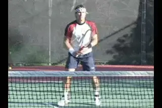
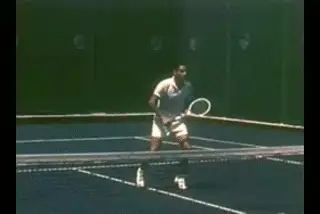
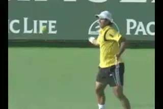
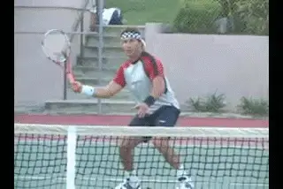
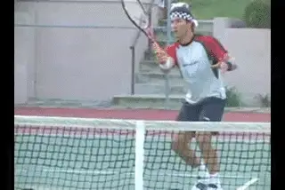
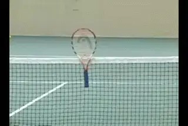
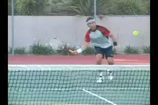
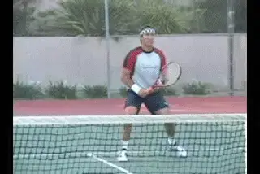
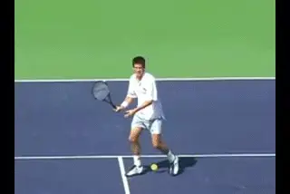
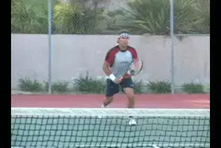

Developing World Class Volleys - Tha Forehand Volley¶
Developing World Class Volleys
The Forehand Volley
Pat Cash

Developing world class volleys, starting with the forehand.
I was taught to volley in the traditional Australian way that goes right back to Rod Laver. This was wooden racquet volleying. And the great thing about the wooden racquet is that it forced you to hit through the ball. It truly did.
There was no forgiveness in the racquets. If you miss hit the ball even slightly, it wouldn't go anywhere. You had to really hit through the ball and time it exactly perfectly.
Although I became known as a server and volley player, I was a complete baseliner as a kid. My coach forced me to start going into the net. He asked "If you can't volley, how can you win a match?" And in the old days with the wood rackets, he had a point. I learned something wonderful there.
In the modern game though, fewer and fewer players are learning to volley and I can understand why. You have less time--you constantly get passed and lobbed. You really need to be quite precise with the volley to be effective. If you drop the ball a little bit short or don't play the shot aggressively, you are in big trouble.
But there is definitely still a place in the game for the volley, in the pros, and even more so at the lower levels. So in these articles I want to share what I know about the volley, including especially some of the fallacies I see that are still widely believed. We'll start this month with the forehand volley and then move on to the backhand in the next article.

Video demonstration — the original video for this article was hosted on TennisPlayer.net.
With the wood rackets you absolutely had to hit through the volley.
Problems
One problem in volleying in the modern game is that basic volley technique has deteriorated with the new rackets. Players can get away with a lot more and often tend to just chop down on the ball rather hitting through it and creating a penetrating shot.
One day I was watching a classic match between Rod Laver and Ken Rosewall in black and white, from about the time I was born. [I just noticed these guys were [taking a full swing at the volley,] not so much with the backswing, but [on the forward motion].]
They hit through the ball almost completely flat with a little underspin. That is a key point that still totally applies if you want to be an effective volleyer at any level.

On the modern forehand, the left arm goes down and back around---not good for volleys.
In today's game, one problem is that the grip on the forehand volley often tends to be too close to Eastern, rather than a true Continental. It's a huge shift to get all the way to a proper volley grip from the modern forehand grips.
A lot of players never get comfortable with using the right grip. With the Eastern grip they hit too much down trying to create spin.
The other big problem is the left hand position. Just about every kid these days has a big semi-western or western forehand. So these players are used to swinging the left hand around and across the body as the shoulders rotate through the shot.
When they try to hit the forehand volley they tend to do the same thing. The left hand pulls away from the ball and they open up the body too much too soon. The left hand goes down somewhere near their pocket and then pulls it back and around the side. Players lose complete control and end up chopping rather than driving through.

"Punching" doesn't really describe the forward swing on a forehand volley.
Fallacies
One of the first fallacies about the volley is that you should "punch" the ball, straightening out your arm like a jab in boxing. That isn't what really happens. [There isn't much movement in the arm and wrist per se. They need to [stay firm.]]
Although there is far less rotation that on the modern groundstrokes, your shoulders and hips still rotate to drive the motion. Think of a chip shot in golf. The swing is through the ball, and the body rotates. That's exactly the same way the volley should be.
On the forehand volley you need to use the left hand as a cantilever or counterbalance if you want to develop good technique. As I just mentioned, modern players have a difficult time using the left arm correctly on the volley. The hand should be up around chest high and in front of your body at the hit. That is probably right about the ideal position.

The left hand stays at chest height as a counterbalance.
[The left hand position allows you hit through, rather than swinging down and rotating around.] It's almost like a slice groundstroke with quite a big follow-through compared to what people would normally think of as a volley. This is even more true on the first volley, which is a very difficult shot in the modern game.
Trajectory
Another point that is misunderstood: [[the trajectory on the volley has to be quite low.] If you hit it too high above the net, it'll definitely go out, especially today.]
The great volleyers, Stefan Edberg, John McEnroe, Patrick Rafter consistently hit the ball an inch or two, maybe three, four inches over the net. They have incredible control. I mean, they really do.
When you are hitting a low volley you're aiming only about an inch or two over the net. You've got to hit that one quite hard, and from that position, if you hit it too high and it has any power, it's just going to float out. [So you really do need to hit through the ball with just a slight underspin.]

Use the racket as a target to develop volley precision.
The point is that a good volley is very precise shot. A good way to work on this is to put your racquet through the holes in the net so that the head is sticking up, and you aim for the head of the racquet. That's about where you should be aiming, particularly for a low volley.

The racket head needs to drop somewhat on lower volleys.
The Knee Fallacy
A second huge fallacy has to do with bending the knees. You do have to get down to the low volley, but the days of really bending down and scraping the court with the knees are long gone.
First in the modern game you don't have time to get that far down. Second, you need time to recover. So, on the low volleys I'm a big believer in dropping the head of the racquet down somewhat to the ball. There is still going to be some knee bend, but it is a fallacy to think that you need to keep the racket head up above your hand to hit a good low volley.
I think John McEnroe is a great example, showing that you don't need to bend your knees down to the court to have great volleys. McEnroe is quite upright. He looks like he's always got time, and he recovers his position on the court so well. He does have freakish control with his hands, of course, but when the ball is low he uses the racket face rather than trying to radically lower his whole body. (link to study his forehand volley in the Stroke Archive.)
Open Stance
The next fallacy is that you need to step across to the ball with a lunge step. I think that is completely wrong. There's too much power in the game and too much topspin for players to try to lunge out to the ball.
I'm very much an open stance volleyer. I try to get behind the ball with the outside foot, the right foot on the forehand.

Open stance volleying, [getting behind the ball] with the right foot.
At almost all costs I try not to step across these days. It just takes your body out of position too much, and often you'll get caught running into the ball and end up jamming yourself up.
In Front?
This is related to the next fallacy, that you need the ball way in front of you. If you can hit it quite late you will have more power with the racquet face, and also the more control.
On the forehand, ideally, we're talking about a few inches in front of the body. The basic swing is just slightly outside to inside the swing, and if you time it right this is a very powerful swing.
But if you push the contact too far out there, you are actually going to lose control and power. The only time I would ever step across or hit the ball way in front would be if the ball is dipping too quickly or is too wide for me.

Contact on the forehand volley is only a few inches in front.
The good volleyers in recent years, like Pat Rafter (link), Tim Henman (link), or Pete Sampras (link), you'll see that they actually contact the ball quite late on the forehand volley.
You also see open stance volleying and this same contact point with the good doubles players, like the Bryan Brothers, or Leander Paes. The doubles guys are really, in my opinion, the best examples of the volley game, and we should learn a little bit from them, since we don't have us old guys to look at anymore.
Split Step
The final fallacy has to do with the split step. You use the split step to change directions. But the key is not to stop, to keep moving forward. Don't stop and wait, if at all possible, continue to run through the volley.
Of course, you don't want to run into the volley. But if it's a slow one, don't split step and wait, continue to run through the volley.

Watch how I use the split step to change directions, but keep moving forward.
One of the difficult things for youngsters who want to learn how to volley is that it is a very athletic shot and tough to master. That's why you tend to see the most athletic players being the best volleyers. Roger Federer. Lleyton Hewitt is a very good volleyer. Andy Murray is a pretty good volleyer. Radak Stepanek.
Even Rafael Nadal can volley quite well. His technique is not ideal, but it's pretty good, and because he's so athletic, he does very well around the net.
Below the world class level, though if you can improve your technique following some of the points in this article, you have a chance to be very effective at the net. So try some of these ideas out on your forehand volley. Stay tuned for the backhand volley in a future article.

Pat Cash is an elite player in tennis history,
singles and doubles titles over a 15 year
career. In the early 1980's he was the number
one junior player in the world, winning at both
Wimbledon and the U.S.Open. In 1987 he won the
men's singles title at Wimbledon defeating
Mats Wilander, Jimmy Connors, and, in the
final, Ivan Lendl, a match considered one of
the greatest examples of attacking tennis ever
played in a Grand Slam final. Today he
continues to compete successful on the senior
tour. We are thrilled to have Pat as a
contributor to Tennisplayer.net!
Visit Pat's official website at